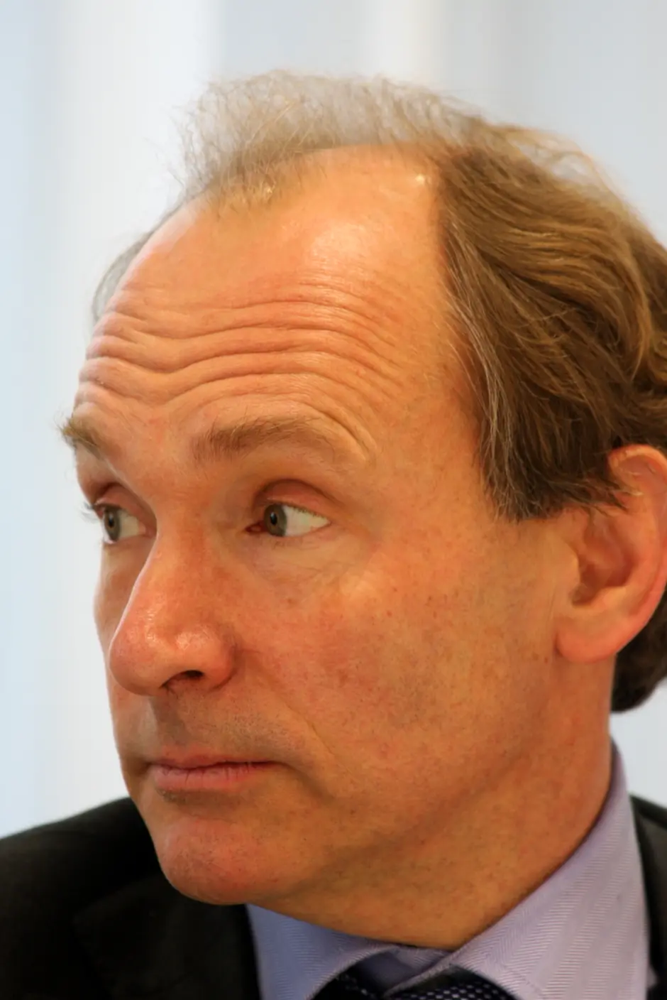
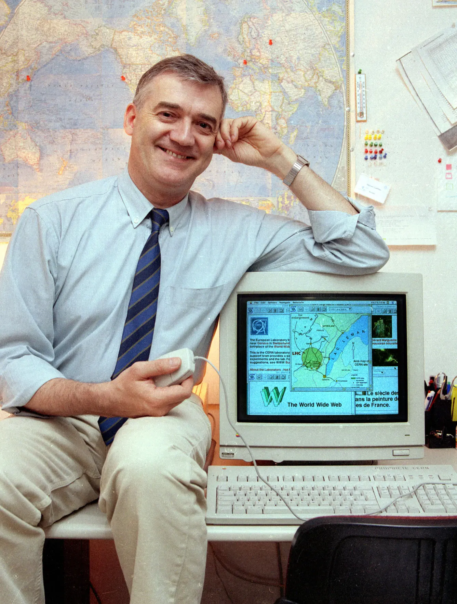

Présentation
Identité

Source | Licence : CC BY | Par Paul Clarke | Tim Berners Lee en 2010
- Naissance : 8 juin 1955, Londres (Royaume-Uni)
- Nationalité : Anglais
- Activités : Informaticien et professeur d’université
Biographie détaillée
Ses parents ont travaillé sur le premier ordinateur commercialement développé, le Ferranti Mark 1.
Quand il était enfant, il se passiona pour l'électronique grâce à un jouet sur les chemins de fer et les trains.
Études
Il a étudié la physique au Queen's College à l'Université d'Oxford de 1973 à 1976.
Il fabrique son premier ordinateur durant ses années d’études à l’université avec un microprocesseur et une vielle télévision.
Il finit ses 3 ans études avec une maîtrise (diplôme anglais prouvant un haut niveau d'études, comparable à un master français).
Carrière avant le WWW
Premier travail chez Plessey
De 1976 à 1978 ,Tim Berners-Lee va travailler durant 2 ans chez Plessey à Poole (Sud du Royaume-Uni), une grande entreprise qui fabrique des équipements de télécommunication au Royaume-Uni.
Il va travailler sur les systèmes de transactions distribués* , les relais de messages et la technologie des codes barres.
* Systèmes de transaction distribués : Ensemble d’instructions d’une application mettant à jour des données sur plusieurs serveurs.
D.G Nash
En 1978, il va quitter la compagnie Plessey et partir chez D.G. Nash à Ferndown (proche de Poole) et il va développer des logiciels de typographies pour imprimantes et un système d’exploitation multitâche.
CERN
Source | Licence CC BY | Par Robert Scoble | Ordinateur NeXT utilisé par Tim Berners-Lee pour inventer le World Wide Web
De juin 1980 au décembre de la même année, il a eu son premier travail au CERN (Conseil européen pour la recherche nucléaire) en tant qu'ingénieur logiciel.
Puis, il travailla pendant 3 ans à Image Computer Systems à Bournemouth sur un projet d'appel de procédure à distance en temps réel afin d'aquérir de l'expérience sur les réseaux informatiques.
De 1984 jusqu'en 1994, il retourne travailler au CERN et il sera connecté à un réseau Arpanet (ancêtre d'Internet).
Le 13 mars 1989, Tim Berners-Lee propose à son supérieur Mike Sendall un projet de gestion des projets du CERN basé sur un système hypertexte distribué. Son supérieur qualifie le projet de vague mais prometteur et il autorise Tim Berners-Lee à travailler dans ce projet.
La naissance du World Wide Web
Son projet sera connu par la suite sous le nom de World Wide Web à partir de mai 1990.
Collaborateur et avancement du projet
Il se joint avec Robert Cailliau, un ingénieur belge, plus d'autres ingénieurs du CERN.

Source | Licence CC BY-SA | Par le CERN | Robert Cailliau assis à côté d'un Macintosh affichant leur projet.
De 1991 jusqu'en 1993, Tim Berners-Lee et ses collègues vont poursuivre le projet et vont mettre en place :
- L’URI (Uniform Resource Identifier) qui permet d’identifier une ressource présente sur Internet.
- Le HTTP (HyperText Transfer Protocol) est un protocole de transmission permettant à l’utilisateur d’accéder à des pages web par l’intermédiaire d’un navigateur.
- Le HTML (Hyper Text Markup Language) est le langage de programmation de base pour concevoir un site web.
Pour matérialiser leur travail, ils créent le premier navigateur web, appelé tout simplement "WorldWideWeb".
 Source | Licence CC BY-SA | Par FredericoMP | "WorldWideWeb"
Source | Licence CC BY-SA | Par FredericoMP | "WorldWideWeb"
Le projet s'étend sur de plus en plus de corps de métier dans le CERN.
Le 30 avril 1993, le CERN décide de verser le logiciel web dans le domaine public.
W3C
Ensuite, en 1994, Tim Berners-Lee a fondé le W3C au Massachusettsetts Institute of Technology (MIT) dans le but de créer des normes et des recommandations pour améliorer la qualité du Web. Le World Wide Web Consortium a décidé que ses normes devraient être fondées sur une technologie libre de droits, de sorte qu’elles puissent facilement être adoptées par quiconque.
Consient que le web peut offir bien plus que ça et que les équipes du W3C sont trop restreintes. Il s'allient avec d'autres entreprises pour faire évoluer le web.
Différentes version sont crées, toujours plus pratique, améliorés et compatible.
Une évolution majeure intervient en 1993 avec l'arrivée du navigateur NCSA Mosaic par le National Center for Supercomputing Applications (NCSA). Il propose une interface plus simple, le NCSA permet au Web d'être adopté par un public beaucoup plus large. Mosaic fut remplacé plus tard par le célèbre navigateur de l'époque Netscape.
À force d'évolution, le web passe d'une simple technologie d'hyperlien avec un web sémantique. Pour passer ce cap, il est aidé par IBM, Nokia, Microsoft, Netscape, Reuters, etc...
 Premier site web | Cliquez ici pour voir la reconstitution
Premier site web | Cliquez ici pour voir la reconstitution
Aujourd'hui, le petit projet de communication de projet du CERN est devenu le plus grand réseau de communication mondial, révolutionnant la face du monde et devient le fer de lance du XXIe siècle.
À l'occasion du 28e anniversaire du Web (le 12 mars 2017), Tim Berners-Lee a dit que pour avancer, il faut combattre les fausses nouvelles, la publicité politique et l'usage abusif de données personnelles.
Distinctions
- 1994 : Membre de la chambre des honneurs du World Wide Web
- 1995 : Prix du jeune inventeur de l'année et avec Robert Caillau, ils reçoivent le Software System Award décerné par l'Association Computing Machinery (ACM)
- 1997 : Il entre au musée national d’histoire américaine (NMAH), aux côtés de Robert E. Kahn, Roland Moreno, Seymour Cray et Gordon Moore.
- 1998 : Il est nommé officier de l’ordre de l’Empire britannique (OBE).
- 1998 : Il reçoit un doctorat d’honneur de l’Université d’Essex.
- 1999 : Le Time Magazine le classe parmi les 100 personnalités les plus importantes du XXe siècle.
- Mars 2000 : Il reçoit un doctorat d’honneur de l’Open University.
- 2001 : Il devient membre de la Royal Society.
- 2002 : Il figure sur la liste de la BBC des 100 plus grands Britanniques de tous les temps (the 100 Greatest Britons).
- 15 avril 2004 : Il reçoit le prix finlandais Millenium Technology Prize. Le prix, dont le montant est d’un million d’euros, est alors décerné par la Présidente de la République de Finlande, Tarja Halonen.
- 16 juillet 2004 : Il est nommé chevalier commandeur de l'ordre de l'Empire britannique par la reine du Royaume-Uni Élisabeth II lors d'une cérémonie d'investiture à Londres.
- 21 juillet 2004 : Il reçoit un diplôme honorifique de doctorat en sciences de l’université de Lancaster.
- 2005 : Il est consacré par le gouvernement allemand qui lui décerne le prix Quadriga en tant que l'un des deux plus importants scientifiques du XXe siècle, aux côtés d'Albert Einstein.
- 2007 : Il figure en tête dans la liste du Telegraph des 100 plus grands génies vivants.
- 13 juin 2007 : La reine Élisabeth II lui confère l'Ordre du Mérite, seconde décoration du royaume britannique et qui n'est conféré qu'à 24 personnes vivantes au total.
- 21 avril 2009 : Il reçoit un doctorat d’honneur de l’université polytechnique de Madrid.
- 28 avril 2009 : Il est nommé associé étranger à l’académie nationale des sciences.
- Juin 2009 : Le Premier ministre du Royaume-Uni Gordon Brown annonce que Tim Berners-Lee va collaborer avec le gouvernement britannique afin d'offrir une meilleure accessibilité aux données numériques, se basant sur le travail du Power of Information Task Force (groupe de travail sur le pouvoir de l'information).
- 17 septembre 2009 : Il reçoit les insignes du doctorat d'honneur de l'université de Liège.
- Octobre 2009 : Il est récompensé d’un doctorat d’honneur par l’université Vrije d’Amsterdam.
- 30 mars 2011 : Il est l’un des trois récipiendaires du prix Mikhail Gorbachev pour L’Homme qui a changé le Monde aux côtés de Ted Turner et Evans Wadongo.
- 26 mai 2011 : Il reçoit un doctorat honorifique en sciences de l’université d'Harvard.
- 2012 : Il entre au temple de la renommée d'Internet, dans la catégorie de innovateurs.
- 27 juillet 2012 : Il est honoré à la cérémonie d'ouverture des Jeux olympiques de Londres, concoctée par le réalisateur Danny Boyle, en apparaissant à l'issue d'un tableau mettant en scène 45 ans de culture populaire britannique.
- 3 décembre 2012 : Il reçoit le prix Sultan Qaboos Order for Culture, Science and Arts par le sultan d’Oman.
- 18 mars 2013 : Il reçoit le 1er Queen Elizabeth Prize for Engineering conjointement avec Louis Pouzin, Vinton Cerf, Robert Kahn et Mark Andreessen. Le prix leur est attribué pour leurs contributions majeures à la création et au développement d'Internet et du World Wide Web.
- 4 avril 2017 : Il reçoit le prix Turing pour avoir inventé le World Wide Web, le premier navigateur web et les protocoles et algorithmes permettant le passage à l'échelle du Web.
Au total, il a reçu pas moins d'une trentaine de distinctions !